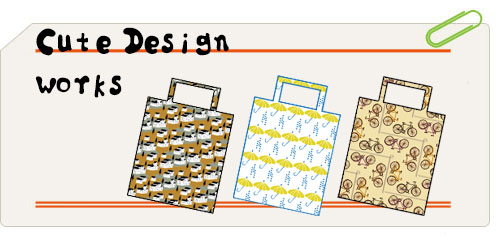
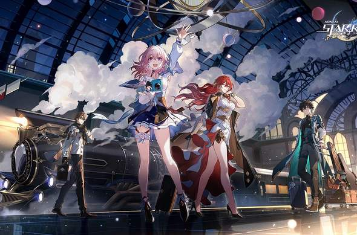
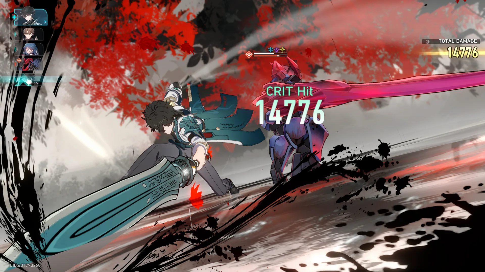

類型
戰略角色扮演,箱庭探索,Roguelike平台
Android, iOS, Microsoft Windows, PlayStation 5開發商
米哈遊營運商
中國大陸：米哈遊 臺港澳：NIJIGEN GAMES 全球：Cognosphere[a]製作人
蔣大衛[1][2]引擎
Unity營運日
Microsoft Windows、iOS、Android全球
2023年4月26日 PS5全球
2023年10月11願此行抵達群星：介紹說明

《崩壞：星穹鐵道》是由米哈遊開發的戰略角色扮演遊戲，於2023年4月26日登陸Microsoft Windows、iOS、Android，於2023年10月11日登陸PlayStation。
本作為繼《FlyMe2theMoon》、《崩壞學園》、《崩壞學園2》、《崩壞3rd》之後，崩壞系列的第5部作品。遊戲融合了日式角色扮演遊戲的元素，戰鬥系統採用回合制，並含有箱庭探索、Roguelike等機制。故事主要講述了遊戲主角「開拓者」登上「星穹列車」漫遊宇宙中各大行星，並在冒險中解決「星核」對各世界帶來的災難。該作是免費遊玩的服務型遊戲，抽卡為主要收費模式。
《崩壞：星穹鐵道》於2019年立項，立項之初確定該遊戲將較為輕度且偏向營運，該專案為米哈遊首次嘗試回合制戰鬥機制，計劃在上線後至少營運6年。由於前作《崩壞3rd》的背景設定是地球，但劇情中曾提到該世界觀中的其他行星，因此製作團隊決定將「宇宙」作為《崩壞：星穹鐵道》的舞台。此外由於玩家反映《崩壞3rd》的操作難度過高，團隊決定《崩壞：星穹鐵道》更重視策略性，並降低操作難度和上手門檻。
《崩壞：星穹鐵道》於2021年10月公開，由於前部作品《原神》的知名程度，遊戲上線前得到了廣泛的期待，並獲得金搖桿獎的最受期待遊戲獎提名。遊戲上線後獲得了普遍正面的評價，其劇情、角色和戰鬥系統得到了評論家的稱讚，但養成系統和收費方式則獲評褒貶不一。遊戲也取得了商業上的成功，上線10天內手遊版本的收入已超過1億美元。
玩法說明
《崩壞：星穹鐵道》是一款戰略角色扮演遊戲，遊戲並非開放世界，而是採用箱庭探索式的地圖，以星球作為章節區域。世界各地存在多個「界域定錨」，可供玩家用於快速旅行。玩家跟隨遊戲主線前往不同的地方，還有機關解密及支線任務等內容。世界各地分布著獎勵高價值資源的關卡，此類資源可以用於強化角色和購買道具，但需要消耗名為「開拓力」的體力才可進入，體力會隨時間推移而緩慢回復。另有名為「模擬宇宙」的Roguelike玩法可獲得高級物資。通過完成某些任務或參加特定的限時活動，玩家可解鎖一些可玩角色，但大多數角色都需通過名為「躍遷」的抽卡系統獲得。遊戲設有保底系統，玩家在抽取一定次數後必定獲得稀有角色。

戰鬥模式為回合制，每個隊伍可包含四名角色。每個角色都有一種「命途」和元素屬性，命途相當於角色職業，分為八種：輸出型的智識命途、巡獵命途、毀滅命途，輔助型的虛無命途、存護命途、同諧命途，用於治癒的豐饒命途，3.0版本新增召喚物參與戰鬥的記憶命途；元素屬性則分為七種：物理、火、冰、雷、風、量子、虛數。每個敵人都有一種或多種元素屬性作為其「弱點」，使用其弱點屬性攻擊可降低敵人的「韌性」，韌性耗盡後將對敵人造成「弱點擊破」效果，使敵人受到額外傷害並遭受減益，一回合後恢復韌性值。每個角色可在戰鬥中使用兩種技能：「戰技」和「終結技」。戰技需要消耗「戰技點」釋放，發動普通攻擊可獲得戰技點；終結技則是需要清空能量才能使用的絕招，普通攻擊和戰技均可累積能量。